3-10-黄金web架构之LAMP
任务需求
一个初创小公司，业务不断在增长，用户注册数量也越来越多，为了满足用户体验，开发要优化网站，需要我们运维提供一个（预生产环境），提供给开发运行调试程序。
并且要求是，保证和线上环境，完全一致，软件安装的路径，配置参数。
（因此就没法使用yum安装，而是编译安装）
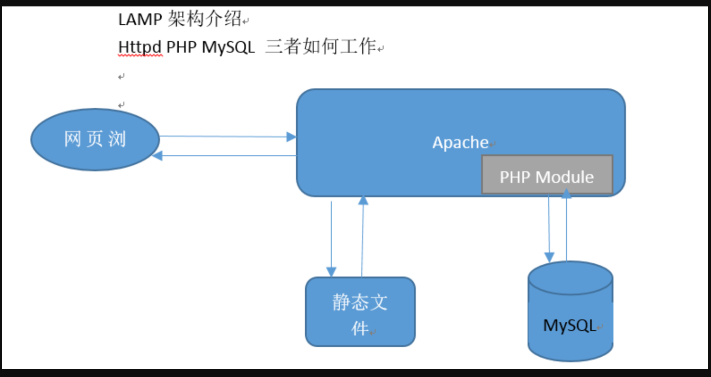
什么是LAMP
LAMP是公认的最常见、最古老的黄金Web技术栈、
其实就是
Linux 操作系统
Apache/Nginx web服务器
Mysql/Mariadb
Perl/Php/Python
linux
作为运维人员，你可以一手使用windows、一手使用Linux，毕竟你的服务器运维工作，几乎都是Linux环境了。
Linux系统主要是以开发者为中心，Windows主要以消费者为中心这是本质的区别。
Linux的特点是几乎所有的开发任务相关工具，都有很完善的支持，从底层的编译器，make编译工具，到bash脚本，git代码管理，vim编辑器，依赖管理工具等等都很齐全。
然而Windows/Mac的操作系统很少能完善这些开发工具的，Linux则是默认预装的开发环境。
apache
Apache Web Server虽然称之为web服务器，但是不是意味着他是一个物理服务器，它只是电脑软件中的一个软件而已，Web服务器的作用是将HTTP请求从前端转发到后端应用上。
php
PHP是一门服务端脚本编程语言，主要用于web开发，常用PHP脚本嵌入HTML源码中执行。
PHP是全球知名的编程语言之一，程序员可以免费试用，PHP支持多种操作系统，开发效率高，支持多种数据库操作。
国内众多网站，百度、雅虎、新浪都在大量使用PHP语言进行开发，知名的论坛软件Discuz也是由PHP开发且占据了80%的论坛软件市场。
mysql
Mysql是一款数据库管理系统，也就是一个存储数据的工具，用户可以自行对数据库进行增加、删除、修改、查询等操作。
MySQL是数据库管理系统中的一款软件，被业界广泛使用，例如新浪、QQ、淘宝、都在大量使用MySQL数据库。
腾讯QQ使用Linux与MySQL数据库，存储注册用户2.8亿的信息，活跃人数9000万，凭借万台服务器搭建的数据库集群，腾讯QQ同时在线人数也达到了千万，这证明了MySQL数据库的大容量、快速响应特点。
MySQL是一款关系型数据库，尤其适合Web应用，特别是电商领域，MySQL遍布各种行业、移动、爱立信、惠普、银行、思科、摩托萝拉、等等。
部署LAMP实战
一、环境准备
软件准备
LAMP
Apache——>httpd
MySQL——>5.6.31
PHP——>7.2.17
apr-1.5.2.tar.bz2
apr-util-1.5.4.tar.bz2
httpd-2.4.37.tar.bz2
mysql-5.6.43
php-7.2.17.tar.xz
wordpress-4.7.3-zh_CN.tar.gz
服务器准备
最好都是新机器
192.168.0.241 lamp-241 部署lamp服务器
192.168.0.242 client-242 用于测试的客户端
停止原有的lamp服务，如果是新机器，就不需要执行。
[root@lamp-241 ~]# netstat -tnlp|grep httpd
[root@lamp-241 ~]# netstat -tnlp|grep httpd
[root@lamp-241 ~]# netstat -tnlp|grep mysql
关闭防火墙
[root@lamp-241 ~]# iptables -F
[root@lamp-241 ~]#
[root@lamp-241 ~]# systemctl stop firewalld
[root@lamp-241 ~]# systemctl disable firewalld
[root@lamp-241 ~]# setenforce 0
做好域名解析，可以用自己搭建的bind服务器，也可以直接/etc/hosts
如果是hosts文件，则要注意，只对机器本机生效
[root@lamp-241 ~]#
[root@lamp-241 ~]# ping yuchao-lamp.cc
PING yuchao-lamp.cc (192.168.0.241) 56(84) bytes of data.
64 bytes from yuchao-lamp.cc (192.168.0.241): icmp_seq=1 ttl=64 time=0.012 ms
64 bytes from yuchao-lamp.cc (192.168.0.241): icmp_seq=2 ttl=64 time=0.021 ms
基础软件库安装（这就好比一个房子要装修，你要去准备水泥、沙子，木材等等..）
linux很多软件的运行，依赖于操作系统本身的一些软件支持
yum groupinstall "Development tools" -y
桌面开发工具包（图形化相关包）
yum groupinstall "Desktop Platform Development" -y
底层编译库的安装
yum install cmake pcre-devel ncurses-devel openssl-devel libcurl-devel -y
编译环境说明
Linux
Apache(2.4)
MySQL(5.6.31)
PHP(7.2.17)
编译安装顺序，由于软件之间存在依赖性，会有先后顺序。
说明：
- apache必须要先于php安装
- apache和mysql之间并没有直接先后顺序的依赖,所以谁先谁后没所谓。
- 在php-5.3版本前，mysql必须先于php的编译;因为php需要实现连接数据库的功能，它通过mysql的接口才能编译出该功能；
- 在php-5.3版本或者之后，php已经集成了一套连接mysql数据的代码，并不依赖mysql的接口，这个时候，mysql和php的编译顺序也就无所谓了。
二、编译安装mysql
1、安装需求
| 软件版本 | 安装目录 | 数据目录 | 端口 |
|---|---|---|---|
| mysql-5.6.31 | /usr/local/mysql | /usr/local/mysql/data | 3306 |
2、安装步骤
㈠ 创建mysql用户
[root@lamp-241 ~]# useradd -r -s /sbin/nologin mysql
㈡ 解压软件并==进入解压目录==
源码搜索地址，https://repo.huaweicloud.com/mysql/Downloads/MySQL-5.6/
[root@lamp-241 ~]# cd /usr/local/
[root@lamp-241 local]# ls
bin etc games include lib lib64 libexec sbin share src
[root@lamp-241 local]#
[root@lamp-241 local]#
[root@lamp-241 local]# mkdir source-code
[root@lamp-241 local]# cd source-code/
[root@lamp-241 source-code]# yum install wget -y
下载源码
[root@lamp-241 source-code]# wget -c https://repo.huaweicloud.com/mysql/Downloads/MySQL-5.6/mysql-5.6.50.tar.gz
解压缩
[root@lamp-241 source-code]# ll -h
total 31M
-rw-r--r--. 1 root root 31M Sep 23 2020 mysql-5.6.50.tar.gz
[root@lamp-241 source-code]# tar -zxf mysql-5.6.50.tar.gz
查看解压文件夹大小
[root@lamp-241 source-code]# du -sh *
282M mysql-5.6.50
31M mysql-5.6.50.tar.gz
㈢ 根据需求配置编译参数
修改编译参数，如安装到指定位置
[root@lamp-241 source-code]# cd mysql-5.6.50
[root@lamp-241 mysql-5.6.50]# ls
BUILD cmd-line-utils Docs INSTALL LICENSE mysys_ssl regex sql-bench support-files vio
client config.h.cmake Doxyfile-perfschema libmysql man packaging scripts sql-common tests win
cmake configure.cmake extra libmysqld mysql-test plugin source_downloads storage unittest zlib
CMakeLists.txt dbug include libservices mysys README sql strings VERSION
[root@lamp-241 mysql-5.6.50]#
# 创建编译脚本，设置编译参数
[root@lamp-241 mysql-5.6.50]# cat cmake.sh
cmake . \
-DCMAKE_INSTALL_PREFIX=/usr/local/mysql/ \
-DMYSQL_DATADIR=/usr/local/mysql/data \
-DENABLED_LOCAL_INFILE=1 \
-DWITH_INNOBASE_STORAGE_ENGINE=1 \
-DMYSQL_TCP_PORT=3306 \
-DDEFAULT_CHARSET=utf8mb4 \
-DDEFAULT_COLLATION=utf8mb4_general_ci \
-DWITH_EXTRA_CHARSETS=all \
-DMYSQL_USER=mysql
[root@lamp-241 mysql-5.6.50]#
添加执行权限
[root@lamp-241 mysql-5.6.50]# chmod +x cmake.sh
[root@lamp-241 mysql-5.6.50]# ll cmake.sh
-rwxr-xr-x. 1 root root 295 Feb 26 17:12 cmake.sh
执行该脚本
./cmake.sh
关于编译传输的解释
首先执行cmake这个命令，用于设置安装mysql的一些参数
后面就是cmake命令的各种参数，比如调整端口，安装目录，安装用户等
cmake . \
-DCMAKE_INSTALL_PREFIX=/usr/local/mysql/ \ 安装路径
-DMYSQL_DATADIR=/usr/local/mysql/data \ 数据目录
-DENABLED_LOCAL_INFILE=1 \ 开启加载外部文件功能；1开启，0关闭
-DWITH_INNOBASE_STORAGE_ENGINE=1 \ 将InnoDB存储引擎静态编译到服务器
-DMYSQL_TCP_PORT=3306 \ 端口
-DDEFAULT_CHARSET=utf8mb4 \ 字符集
-DDEFAULT_COLLATION=utf8_general_ci \ 字符校验规则
-DWITH_EXTRA_CHARSETS=all \ 扩展字符集
-DMYSQL_USER=mysql 用户身份mysql
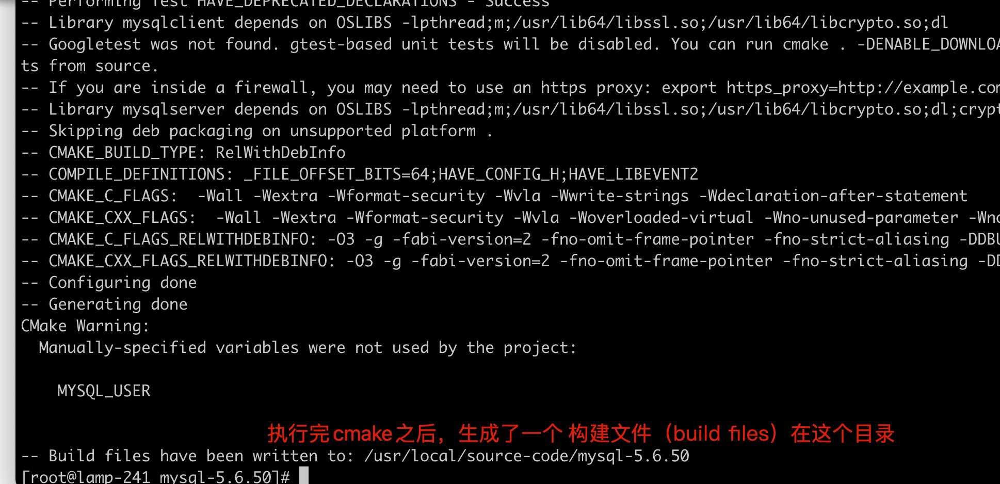
㈣ 编译并安装
目前mysql还是没有的，只有安装结束后，会自动生成
[root@lamp-241 mysql-5.6.50]# ls /usr/local/mysql
ls: cannot access /usr/local/mysql: No such file or directory
开始编译，以及安装到指定的位置
安装过程会较久，等待即可，别出问题就行。
[root@lamp-241 mysql-5.6.50]# make && make install
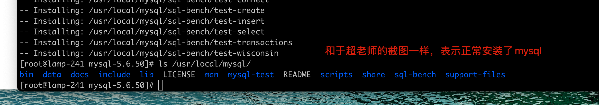
㈤ 安装mysql后续配置
修改mysql安装目录的权限，属主，属组
chown -R mysql.mysql /usr/local/mysql/
[root@lamp-241 mysql-5.6.50]# chown -R mysql.mysql /usr/local/mysql/
[root@lamp-241 mysql-5.6.50]# ll /usr/local/mysql/
total 224
drwxr-xr-x. 2 mysql mysql 4096 Feb 26 17:48 bin
drwxr-xr-x. 3 mysql mysql 18 Feb 26 17:48 data
drwxr-xr-x. 2 mysql mysql 55 Feb 26 17:48 docs
drwxr-xr-x. 3 mysql mysql 4096 Feb 26 17:48 include
drwxr-xr-x. 3 mysql mysql 4096 Feb 26 17:48 lib
-rw-r--r--. 1 mysql mysql 198041 Sep 23 2020 LICENSE
drwxr-xr-x. 4 mysql mysql 30 Feb 26 17:48 man
drwxr-xr-x. 10 mysql mysql 4096 Feb 26 17:48 mysql-test
-rw-r--r--. 1 mysql mysql 587 Sep 23 2020 README
drwxr-xr-x. 2 mysql mysql 30 Feb 26 17:48 scripts
drwxr-xr-x. 28 mysql mysql 4096 Feb 26 17:48 share
drwxr-xr-x. 4 mysql mysql 4096 Feb 26 17:48 sql-bench
drwxr-xr-x. 2 mysql mysql 136 Feb 26 17:48 support-files
初始化数据库，生成可用的数据库文件。
1.移除默认的mysql配置文件，改名即可
[root@lamp-241 mysql-5.6.50]# mv /etc/my.cnf /etc/my.cnf.ori
[root@lamp-241 mysql-5.6.50]#
[root@lamp-241 mysql-5.6.50]# ls /etc/my.cnf
ls: cannot access /etc/my.cnf: No such file or directory
2.确保没有mysql进程
[root@lamp-241 mysql-5.6.50]#
[root@lamp-241 mysql-5.6.50]# ps -ef|grep mysql
root 38296 9072 0 17:52 pts/1 00:00:00 grep --color=auto mysql
3.进入mysql安装目录，开始初始化
[root@lamp-241 mysql-5.6.50]# cd /usr/local/mysql/
[root@lamp-241 mysql]#
[root@lamp-241 mysql]# ./scripts/mysql_install_db --user=mysql
看到两个ok后表示安装正确
4.验证数据库目录里是否有文件
[root@lamp-241 mysql]# [root@lamp-241 mysql]# ll /usr/local/mysql/data
total 110600
-rw-rw----. 1 mysql mysql 12582912 Feb 26 17:53 ibdata1
-rw-rw----. 1 mysql mysql 50331648 Feb 26 17:53 ib_logfile0
-rw-rw----. 1 mysql mysql 50331648 Feb 26 17:53 ib_logfile1
drwx------. 2 mysql mysql 4096 Feb 26 17:53 mysql
drwx------. 2 mysql mysql 4096 Feb 26 17:53 performance_schema
drwxr-xr-x. 2 mysql mysql 20 Feb 26 17:48 test
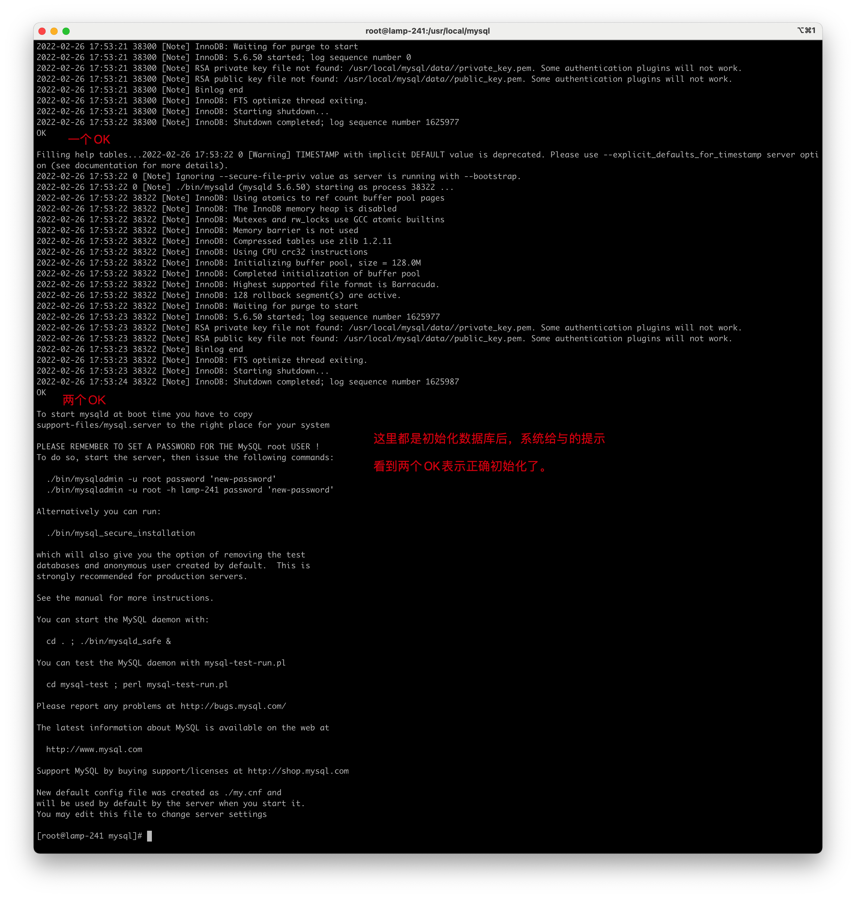
制作启动mysql脚本，系统提供好了模板
拷贝脚本，放入linux一个固定的服务启动目录
[root@lamp-241 mysql]# cp /usr/local/mysql/support-files/mysql.server /etc/init.d/mysql
启动、检查mysql服务
[root@lamp-241 mysql]#
[root@lamp-241 mysql]# service mysql status
ERROR! MySQL is not running
[root@lamp-241 mysql]# service mysql start
Starting MySQL.Logging to '/usr/local/mysql/data/lamp-241.err'.
SUCCESS!
[root@lamp-241 mysql]# service mysql status
SUCCESS! MySQL running (38476)
设置mysql默认密码
[root@lamp-241 mysql]# /usr/local/mysql/bin/mysqladmin -uroot password 'yuchao666'
Warning: Using a password on the command line interface can be insecure.
测试mysql登录
确保服务运行了
[root@lamp-241 mysql]# ps -ef|grep mysql
root 38380 1 0 17:58 pts/1 00:00:00 /bin/sh /usr/local/mysql/bin/mysqld_safe --datadir=/usr/local/mysql/data --pid-file=/usr/local/mysql/data/lamp-241.pid
mysql 38476 38380 0 17:58 pts/1 00:00:00 /usr/local/mysql/bin/mysqld --basedir=/usr/local/mysql --datadir=/usr/local/mysql/data --plugin-dir=/usr/local/mysql/lib/plugin --user=mysql --log-error=lamp-241.err --pid-file=/usr/local/mysql/data/lamp-241.pid
root 38514 9072 0 18:00 pts/1 00:00:00 grep --color=auto mysql
端口
[root@lamp-241 mysql]# netstat -tnlp|grep mysql
tcp6 0 0 :::3306 :::* LISTEN 38476/mysqld
使用mysql登录命令
[root@lamp-241 mysql]# mysql -uroot -pyuchao666
-bash: mysql: command not found
需要配置环境变量
[root@lamp-241 mysql]# tail -1 /etc/profile
export PATH=/usr/local/mysql/bin/:$PATH
检查PATH变量
[root@lamp-241 mysql]# source /etc/profile
[root@lamp-241 mysql]#
[root@lamp-241 mysql]# echo $PATH
/usr/local/mysql/bin/:/usr/local/sbin:/usr/local/bin:/usr/sbin:/usr/bin:/root/bin
执行命令登录
[root@lamp-241 mysql]# mysql -uroot -pyuchao666
Warning: Using a password on the command line interface can be insecure.
Welcome to the MySQL monitor. Commands end with ; or \g.
Your MySQL connection id is 2
Server version: 5.6.50 Source distribution
Copyright (c) 2000, 2020, Oracle and/or its affiliates. All rights reserved.
Oracle is a registered trademark of Oracle Corporation and/or its
affiliates. Other names may be trademarks of their respective
owners.
Type 'help;' or '\h' for help. Type '\c' to clear the current input statement.
mysql>
三、编译安装Apache
1. 安装依赖包apr
apr(apache portable run-time libraries，Apache可移植运行库)的目的如其名称一样，主要为上层的应用程序提供一个可以跨越多操作系统平台使用的底层支持接口库。
下载地址
http://archive.apache.org/dist/apr/
文件地址
[root@lamp-241 source-code]# wget -c http://archive.apache.org/dist/apr/apr-1.5.2.tar.bz2
解压缩，编译安装即可
[root@lamp-241 source-code]# tar -xf apr-1.5.2.tar.bz2
[root@lamp-241 source-code]# ls
apr-1.5.2 apr-1.5.2.tar.bz2 mysql-5.6.50 mysql-5.6.50.tar.gz
[root@lamp-241 source-code]# cd apr-1.5.2
如果不指定配置参数，则会安装到默认路径
并且这里需要修改一个配置
修改此行
[root@lamp-241 apr-1.5.2]# vim configure
29605 RM='$RM -f'
再次执行配置脚本
[root@lamp-241 apr-1.5.2]# ./configure
开始编译安装
[root@lamp-241 apr-1.5.2]# make && make install
安装apr-util软件
完整的APR(Apache portable Run-time libraries，Apache可移植运行库)实际上包含了三个开发包：apr、apr-util以及apr-iconv，每一个开发包分别独立开发，并拥有自己的版本。
apr-util该目录中也是包含了一些常用的开发组件。
这些组件与apr目录下的相比，它们与apache的关系更加密切一些。比如存储段和存储段组，加密等等
[root@lamp-241 source-code]# pwd
/usr/local/source-code
[root@lamp-241 source-code]# ls
apr-1.5.2 apr-1.5.2.tar.bz2 mysql-5.6.50 mysql-5.6.50.tar.gz
[root@lamp-241 source-code]#
[root@lamp-241 source-code]#
[root@lamp-241 source-code]# wget -c https://archive.apache.org/dist/apr/apr-util-1.5.4.tar.bz2
解压缩
[root@lamp-241 source-code]# tar -xf apr-util-1.5.4.tar.bz2
[root@lamp-241 source-code]# ls
apr-1.5.2 apr-1.5.2.tar.bz2 apr-util-1.5.4 apr-util-1.5.4.tar.bz2 mysql-5.6.50 mysql-5.6.50.tar.gz
开始编译安装apr-utils ，且需要指定安装的apr命令路径
[root@lamp-241 source-code]# cd apr-util-1.5.4
[root@lamp-241 apr-util-1.5.4]#
[root@lamp-241 apr-util-1.5.4]# ./configure --with-apr=/usr/local/apr/bin/apr-1-config
编译且安装
[root@lamp-241 apr-util-1.5.4]# make && make install
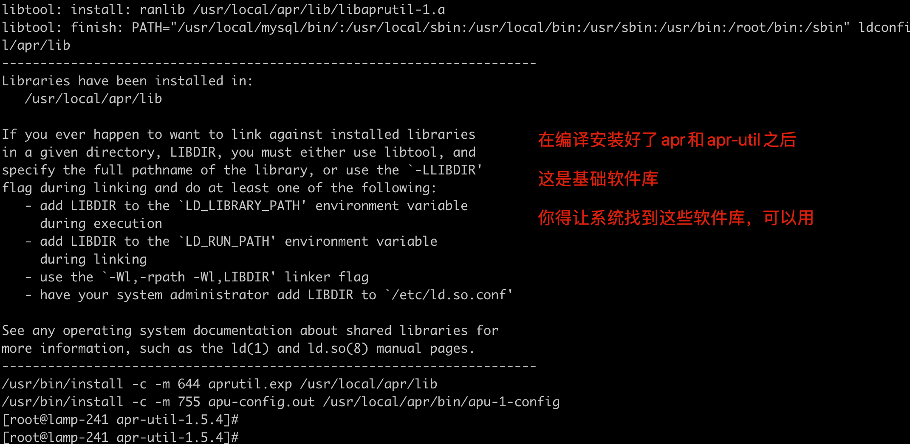
[root@lamp-241 apr-util-1.5.4]# ls /usr/local/apr/lib
apr.exp libapr-1.la libapr-1.so.0.5.2 libaprutil-1.so libexpat.a libexpat.so.0
aprutil.exp libapr-1.so libaprutil-1.a libaprutil-1.so.0 libexpat.la libexpat.so.0.5.0
libapr-1.a libapr-1.so.0 libaprutil-1.la libaprutil-1.so.0.5.4 libexpat.so pkgconfig
这些.so就好比windows下的.dll
ldconfig命令
思考：
==一个软件的库文件是有可能被其它软件所调用，那么其它软件能否找到你的库文件呢？==
- 一般来说，库文件安装到/lib,/lib64,/usr/lib/,/usr/lib64等，都可以找得到； 但是如果一个软件A把库文件安装到/usr/local/A/lib下，就要把这个路径加入到ldconfig命令可以找到的路径列表里面去，别人才能找到。
- ldconfig是一个动态链接库管理命令；主要用途是在默认搜索目录（/lib,/lib64,/usr/lib/,/usr/lib64）以及动态库配置文件/etc/ld.so.conf中所列的目录中搜索出可共享的动态链接库。
问题：怎样将库文件的指定安装路径加入到ldconfig命令的搜索列表里？
方法1：在/etc/ld.so.conf这个主配置文件里加上一行，写上让别人要查找库文件的路径
[root@lamp-241 apr-util-1.5.4]# echo "/usr/local/apr/lib/" >> /etc/ld.so.conf
[root@lamp-241 apr-util-1.5.4]#
[root@lamp-241 apr-util-1.5.4]# cat /etc/ld.so.conf
include ld.so.conf.d/*.conf
/usr/local/apr/lib/
方法2：在/etc/ld.so.conf.d/目录下创建一个*.conf结尾的文件，里面加入该路径即可
# echo /usr/local/apr/lib/ > /etc/ld.so.conf.d/lamp.conf
# ldconfig 上面加入路径后，就使用此命令让其生效
2. 编译安装httpd
| 版本 | 安装路径 |
|---|---|
| httpd-2.4.37 | /usr/local/ |
㈠ 解压软件并进入解压目录，第一曲
链接
https://archive.apache.org/dist/httpd/
httpd源码下载
[root@lamp-241 source-code]# ls
apr-1.5.2 apr-1.5.2.tar.bz2 apr-util-1.5.4 apr-util-1.5.4.tar.bz2 mysql-5.6.50 mysql-5.6.50.tar.gz
[root@lamp-241 source-code]#
[root@lamp-241 source-code]#
[root@lamp-241 source-code]# pwd
/usr/local/source-code
[root@lamp-241 source-code]#
[root@lamp-241 source-code]# wget -c https://archive.apache.org/dist/httpd/httpd-2.4.37.tar.bz2
解压缩httpd
[root@lamp-241 source-code]# tar -xf httpd-2.4.37.tar.bz2
[root@lamp-241 source-code]# cd httpd-2.4.37
[root@lamp-241 httpd-2.4.37]# ls
ABOUT_APACHE build config.layout httpd.dsp LAYOUT Makefile.win README.cmake test
acinclude.m4 BuildAll.dsp configure httpd.mak libhttpd.dep modules README.platforms VERSIONING
Apache-apr2.dsw BuildBin.dsp configure.in httpd.spec libhttpd.dsp NOTICE ROADMAP
Apache.dsw buildconf docs include libhttpd.mak NWGNUmakefile server
apache_probes.d CHANGES emacs-style INSTALL LICENSE os srclib
ap.d CMakeLists.txt httpd.dep InstallBin.dsp Makefile.in README support
[root@lamp-241 httpd-2.4.37]#
㈡ 根据需求配置，第二曲
依旧是于超老师的编译三部曲
1.修改配置参数，可以做成脚本
[root@lamp-241 httpd-2.4.37]# cat apache-configure.sh
./configure \
--enable-modules=all \
--enable-mods-shared=all \
--enable-so \
--enable-rewrite \
--with-pcre \
--enable-ssl \
--with-mpm=prefork \
--with-apr=/usr/local/apr/bin/apr-1-config \
--with-apr-util=/usr/local/apr/bin/apu-1-config
添加执行权限，执行该脚本
[root@lamp-241 httpd-2.4.37]# chmod +x apache-configure.sh
[root@lamp-241 httpd-2.4.37]# ./apache-configure.sh
如果你前面都和超哥的一样，那就不会出问题。
配置参数说明：
apache默认啥功能都没有，必须通过模块的进行添加！
# ./configure
--enable-modules=all 加载所有支持模块
--enable-mods-shared=all 共享方式加载大部分常用的模块
--enable-so 启动动态模块加载功能
--enable-rewrite 启用url地址重写功能
--enable-ssl 编译ssl模块，支持https
--with-pcre 支持正则表达式
--with-apr=/usr/local/apr/bin/apr-1-config 指定依赖软件apr路径
--with-apr-util=/usr/local/apr/bin/apu-1-config
--with-mpm=prefork 插入式并行处理模块，称为多路处理模块，Prefork 是类UNIX平台上默认的MPM
（1）prefork
多进程模型，每个进程响应一个请求
（2）worker
多进程多线程模型，每个线程处理一个用户请求
（3）event(最优)
事件驱动模型，多进程模型，每个进程响应多个请求
有可能会缺少一些依赖库
yum -y install pcre-devel
yum -y install openssl-devel
这些库就是和你上面给httpd编译添加的参数，是对应起来的了。
㈢ 编译并安装，第三曲
[root@lamp-241 httpd-2.4.37]# pwd
/usr/local/source-code/httpd-2.4.37
[root@lamp-241 httpd-2.4.37]# make && make install
查看是否安装了httpd
[root@lamp-241 httpd-2.4.37]# ls /usr/local/apache2/
bin build cgi-bin conf error htdocs icons include logs man manual modules
看到这个目录文件，和超哥的一样，你就是装好apache了。
四、编译安装php
1、解压软件并进入解压目录
[root@lamp-241 source-code]# wget -c https://museum.php.net/php7/php-7.2.17.tar.xz
[root@lamp-241 source-code]# ls
apr-1.5.2 apr-1.5.2.tar.bz2 apr-util-1.5.4 apr-util-1.5.4.tar.bz2 httpd-2.4.37 httpd-2.4.37.tar.bz2 mysql-5.6.50 mysql-5.6.50.tar.gz php-7.2.17.tar.xz
[root@lamp-241 source-code]#
解压缩
[root@lamp-241 source-code]# cd php-7.2.17
[root@lamp-241 php-7.2.17]# vim configure_php.sh[root@lamp-241 php-7.2.17]# [root@lamp-241 php-7.2.17]# cat configure_php.sh
./configure \
--with-apxs2=/usr/local/apache2/bin/apxs \
--with-mysqli \
--with-pdo-mysql \
--with-zlib \
--with-curl \
--enable-zip \
--with-gd \
--with-freetype-dir \
--with-jpeg-dir \
--with-png-dir \
--enable-sockets \
--with-xmlrpc \
--enable-soap \
--enable-opcache \
--enable-mbstring \
--enable-mbregex \
--enable-pcntl \
--enable-shmop \
--enable-sysvmsg \
--enable-sysvsem \
--enable-sysvshm \
--enable-calendar \
--enable-bcmath
配置参数解释
在这里，你就要注意到，软件的编译安装，是一环节一环的，php编译参数开通一些功能，是需要你提前装好apache的，明白超哥前面讲的了吗？
--with-apxs2=/usr/local/apache2/bin/apxs
指定apxs路径,apxs是一个为Apache HTTP服务器编译和安装扩展模块的工具
--with-mysql php7中已被废弃
--with-mysqli
--with-pdo-mysql
以上三个是php的扩展，用于连接mysql数据库的
--with-iconv-dir
--with-freetype-dir
--with-jpeg-dir
--with-png-dir
--with-gd
--with-zlib
--with-libxml-dir
这些都是在启用对某种文件的支持
--with-curl 和 --with-curlwrappers
用于支持 curl 函数，此函数允许你用不同的协议连接和沟通不同的服务器
--with-openssl,--with-mhash,--with-mcrypt
这都是和加密有关的参数，启用它们是为了让php可以更好的支持各种加密。
--enable-bcmath 高精度数学运算组件。
--enable-shmop和 --enable-sysvsem
使得你的PHP系统可以处理相关的IPC函数.IPC是一个Unix标准通讯机制，它提供了使得在同一台主机不同进程之间可以互相通讯的方法。
--enable-inline-optimization 栈堆指针和优化线程。
--enable-pcntl 多线程优化。
with-apxs2 调用apache加载模块支持PHP
gd 画图库
libiconv 字符变换转换
libmcrypt 字符加密
mcrypt 字符加密
mhash 哈希运算
如果可能报错，缺少一些库，则需要安装如下依赖
比如你在装机时候，选择的软件包的不同
yum install libxml2-devel -y
yum install libjpeg-devel -y
yum install libpng-devel -y
yum install freetype-devel -y
yum -y install libcurl-devel
2、configure配置php编译
执行该脚本
[root@lamp-241 php-7.2.17]# chmod +x configure_php.sh
[root@lamp-241 php-7.2.17]#
[root@lamp-241 php-7.2.17]# ./configure_php.sh
3、编译且安装
[root@lamp-241 php-7.2.17]# make && make install
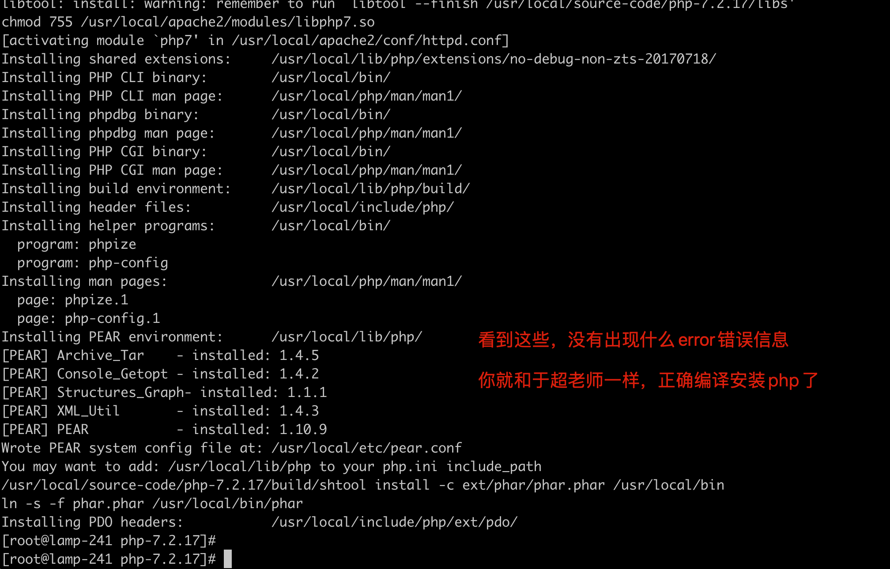
五、结合php和apache配置
1、修改apache配置文件支持php
1.修改apache配置文件，找到你的安装路径
配置语言支持
159 LoadModule negotiation_module modules/mod_negotiation.so 去掉这一行的注释
482 Include conf/extra/httpd-languages.conf 打开此选项，扩展配置文件就生效了
让apache支持php语言的插件，当有用户访问php程序时，apache自动转发给php程序去解析。
166 LoadModule php7_module modules/libphp7.so 找到这一行，然后在下面添加语句
添加以下两行意思是以.php结尾的文件都认为是php程序文件，注意两句话的.php前面都是有一个空格的
也就是长这样
166 LoadModule php7_module modules/libphp7.so
167 AddHandler php7-script .php
168 AddType text/html .php
添加一个默认的网站首页，添加为php的文件
263 #
264 # DirectoryIndex: sets the file that Apache will serve if a directory
265 # is requested.
266 #
267 <IfModule dir_module>
268 DirectoryIndex index.php index.html
269 </IfModule>
270
关于网站默认的首页html文件，存放的目录路径，由以下参数控制
230 # DocumentRoot: The directory out of which you will serve your
231 # documents. By default, all requests are taken from this directory, but
232 # symbolic links and aliases may be used to point to other locations.
233 #
234 DocumentRoot "/usr/local/apache2/htdocs"
235 <Directory "/usr/local/apache2/htdocs">
2.修改apache的子配置文件，优先支持中文，需要做如下两步操作
[root@lamp-241 php-7.2.17]# vim /usr/local/apache2/conf/extra/httpd-languages.conf
19 DefaultLanguage zh-CN
75 # Just list the languages in decreasing order of preference. We have
76 # more or less alphabetized them here. You probably want to change this.
77 #
78 LanguagePriority zh-CN en ca cs da de el eo es et fr he hr it ja ko ltz nl nn no pl pt pt-BR ru sv tr zh-CN zh-TW
3.修改apache的域名，也就是我们网站的域名配置
210 ServerName yuchao-lamp.cc
2、测试apache是否支持php
进入apache网页根目录，创建一个php文件，查看是否执行
[root@lamp-241 htdocs]# pwd
/usr/local/apache2/htdocs
[root@lamp-241 htdocs]# cat index.php
<?php
phpinfo();
?>
3、启动apache
拷贝apache默认提供的一个脚本即可，就是启动apache的命令
[root@lamp-241 htdocs]# cp /usr/local/apache2/bin/apachectl /etc/init.d/apache
[root@lamp-241 htdocs]# netstat -tnlp|grep 80
[root@lamp-241 htdocs]#
[root@lamp-241 htdocs]# service apache start
[root@lamp-241 htdocs]# netstat -tnlp|grep 80
tcp6 0 0 :::80 :::* LISTEN 100853/httpd
4、测试LAMP架构
访问你的apache服务器即可，默认是80端口，如果能看到php的页面，表示正常。
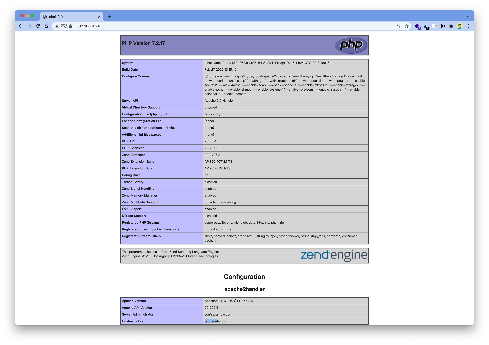
看到这就表示，你已经部署好了一个linux+apache+mysql+php的服务器，可以提供给开发人员，测试运行代码了。
六、部署web应用
此时你只需要获取一个php的软件源码即可，超哥这里下载wordpress程序，这是一个php开发的全球知名博客网站。
https://cn.wordpress.org/wordpress-4.7.3-zh_CN.tar.gz
1.下载源码
[root@lamp-241 source-code]# wget -c https://cn.wordpress.org/wordpress-4.7.3-zh_CN.tar.gz
2.创建目录，保存wordpress的代码
以及解压缩源码，全部拷贝到该目录中
[root@lamp-241 source-code]# mkdir -p /www/yuchao-blog
[root@lamp-241 source-code]# tar -zxf wordpress-4.7.3-zh_CN.tar.gz
[root@lamp-241 source-code]# cp -a wordpress/* /www/yuchao-blog/
[root@lamp-241 source-code]#
3.更改wordpress源码属主属组
[root@lamp-241 source-code]# chown -R daemon.daemon /www/yuchao-blog/
4.准备网站上线发布（给apache添加一个新配置文件，专门发布我们这个wordpress）虚拟主机
[root@lamp-241 source-code]# vim /usr/local/apache2/conf/httpd.conf
492 # Virtual hosts
493 Include conf/extra/httpd-vhosts.conf
5.修改该虚拟主机配置文件，添加关于wordpress的配置信息
[root@lamp-241 extra]# ls -l /usr/local/apache2/conf/extra/httpd-vhosts.conf
-rw-r--r--. 1 root root 1467 Feb 26 20:05 /usr/local/apache2/conf/extra/httpd-vhosts.conf
注释掉该文件中，默认的虚拟主机，然后添加超哥这个即可
注意两个事
做好yuchao-wordpress.cc域名解析
<VirtualHost *:80>
DocumentRoot "/www/yuchao-blog"
ServerName yuchao-wordpress.cc
ErrorLog "logs/blog-error_log"
CustomLog "logs/blog-access_log" common
</VirtualHost>
6.关于hosts文件修改，做好域名解析
[root@lamp-241 extra]# vim /etc/hosts
[root@lamp-241 extra]# cat /etc/hosts
127.0.0.1 localhost localhost.localdomain localhost4 localhost4.localdomain4
::1 localhost localhost.localdomain localhost6 localhost6.localdomain6
192.168.0.241 yuchao-lamp.cc
192.168.0.241 yuchao-wordpress.cc
7.mysql数据库配置，写博客，数据往哪寸？mysql里面存。密码yuchao666
[root@lamp-241 extra]# mysql -uroot -pyuchao666
Warning: Using a password on the command line interface can be insecure.
Welcome to the MySQL monitor. Commands end with ; or \g.
Your MySQL connection id is 5
Server version: 5.6.50 Source distribution
Copyright (c) 2000, 2020, Oracle and/or its affiliates. All rights reserved.
Oracle is a registered trademark of Oracle Corporation and/or its
affiliates. Other names may be trademarks of their respective
owners.
Type 'help;' or '\h' for help. Type '\c' to clear the current input statement.
mysql>
创建存储博客的数据库yuchao_blog
mysql> create database yuchao_blog default charset utf8;
Query OK, 1 row affected (0.16 sec)
8.重启apache，查看是否有报错
[root@lamp-241 man]# mkdir -p /www/blog
[root@lamp-241 man]# service apache restart
[root@lamp-241 man]# netstat -tnlp|grep 80
tcp6 0 0 :::80 :::* LISTEN 100853/httpd
七、测试访问wordpress
你可以在客户端，做好hosts解析
➜ ~ tail -1 /etc/hosts
192.168.0.241 yuchao-wordpress.cc
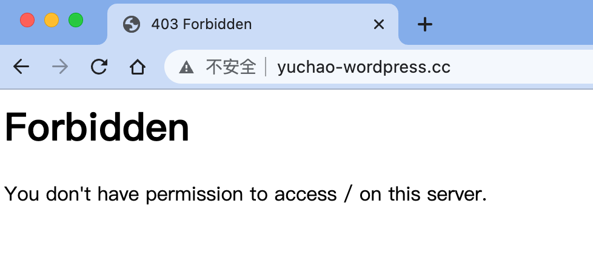
发现提示Forbidden，也就是禁止访问了，这种是403错误，权限不足，并且你要知道，这是apache给与你的响应，你只要去找apache的配置就行。
修改apache配置，添加可访问权限
修改这里Require all denied 默认拒绝所有，改为Require all granted
212 #
213 # Deny access to the entirety of your server's filesystem. You must
214 # explicitly permit access to web content directories in other
215 # <Directory> blocks below.
216 #
217 <Directory />
218 AllowOverride none
219 Require all granted
220 </Directory>
1、正确结果
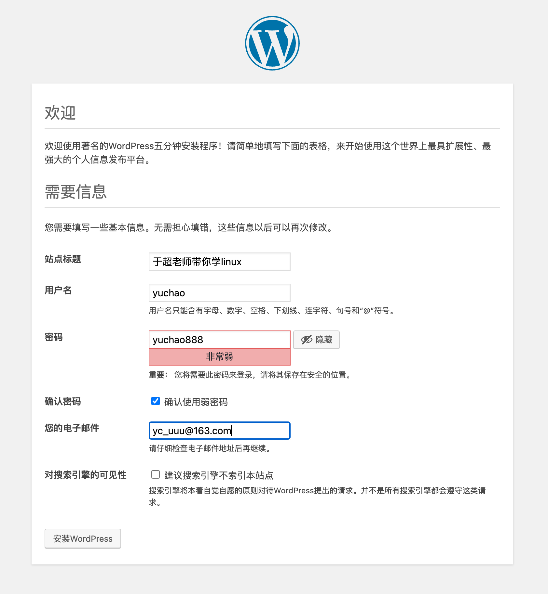
2、写下第一篇文章
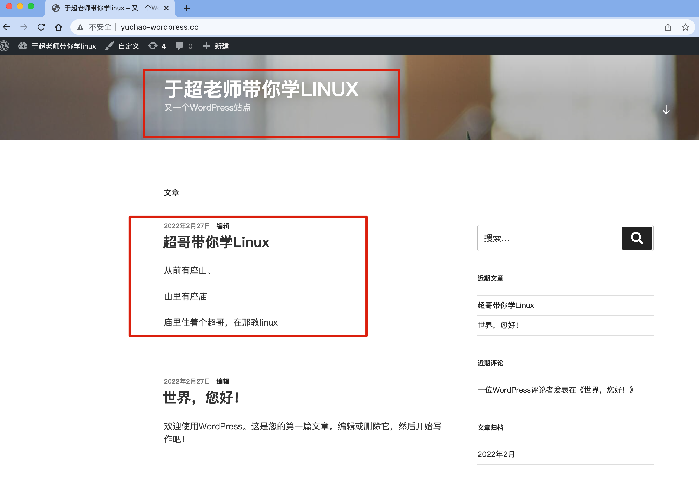
实战总结
1.关于源码编译的记录
1.系统环境的准备，一些基础库
# 通过指定参数，来确认你想要安装的软件安装在哪里，加上哪些功能和去掉哪些功能
./configure 或者 cmake
# 如果这一步报错，基本都是缺少依赖包，解决办法：
1> 使用yum去安装，一般来说，rhel/centos做为一个成熟的linux操作系统，常见的底层依赖包都自带了，所以安装下面这两个组，一般都会有你所需要的依赖包。
# yum groupinstall "Development tools" -y
# yum groupinstall "Desktop Platform Development" -y
2> 如果缺少依赖包在rhel/centos的yum源里找不到，则上网下载第三方的软件，先编译第三方软件，再编译本软件
关于./configure的参数解释
./configure --help 查看所有的编译参数
第一个重要参数
--prefix= 此参数指定安装目录(一般安装到/usr/local/或者/usr/local/软件名下)
注意：如果指定了新的路径，注意后续环境变量的修改
第二类重要参数:
--enable-xxx 打开一个功能（默认是关闭的）
--disable-xxx 关闭一个功能（默认是打开的）
第三类参数:
--with-xxx=DIR/file 指定一个目录或文件，调用此目录或文件的功能
2.编译阶段
make
相当于是根据你上一步定义好的文件（Makefile），把这个软件给做出来（这一步一般很少出错，如果出错，问题都比较麻烦。可能是一些兼容性的问题等等，你可以尝试上网查询解决方法,如果查不到，只能换个环境或者换个软件版本或者换些编译参数重新编译）
3.安装软件阶段
make install
把做好的软件，安装到你第一步所指定的安装目录里（这一步几乎不会出错的），如果目录不存在会自动创建
2.关于部署流程
所有部署的任务，都可以遵循一个简答的解决办法
1.确认部署的目标，业务需求
2.下载软件
3.编辑软件配置文件
4.运行软件
5.测试软件
6.应用软件。
课后作业
1.完成LAMP编译搭建，部署wordpress、发表博客。
2.理解web服务器概念
3.理解linux+apache+mysql+php的工作流程（绘图）
4.理解如何修改apache配置文件，创建虚拟主机，修改网页默认根目录（默认是/var/www/html）
5.同样的流程，再部署好于超老师提供好的如下源码（重点）
iWebShop5.8.zip
要求访问
yuchao-webshop.cc 即可看到该电商网址（基于域名的虚拟主机）
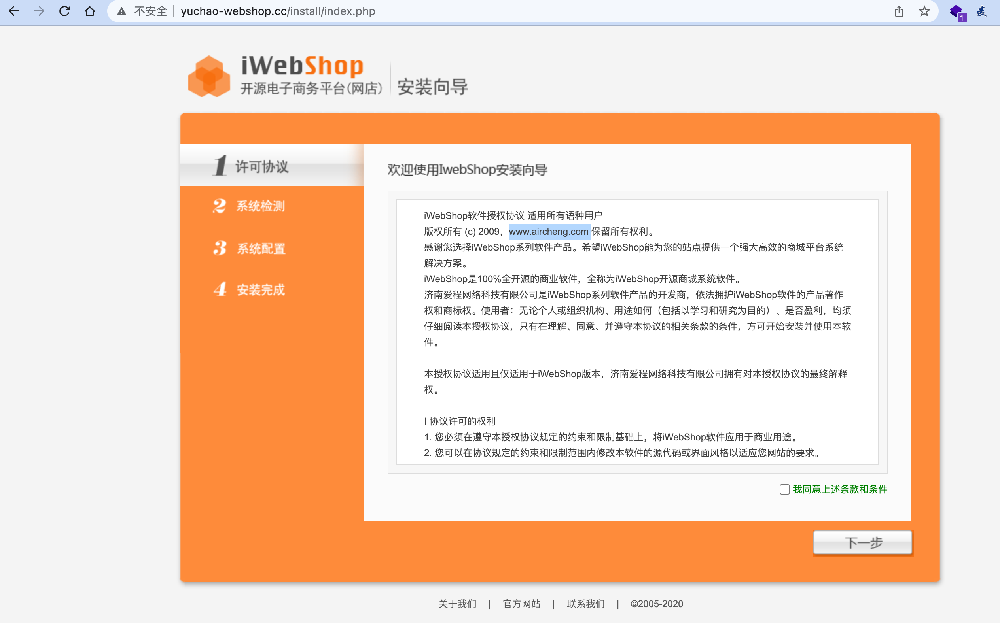
完成部署结果